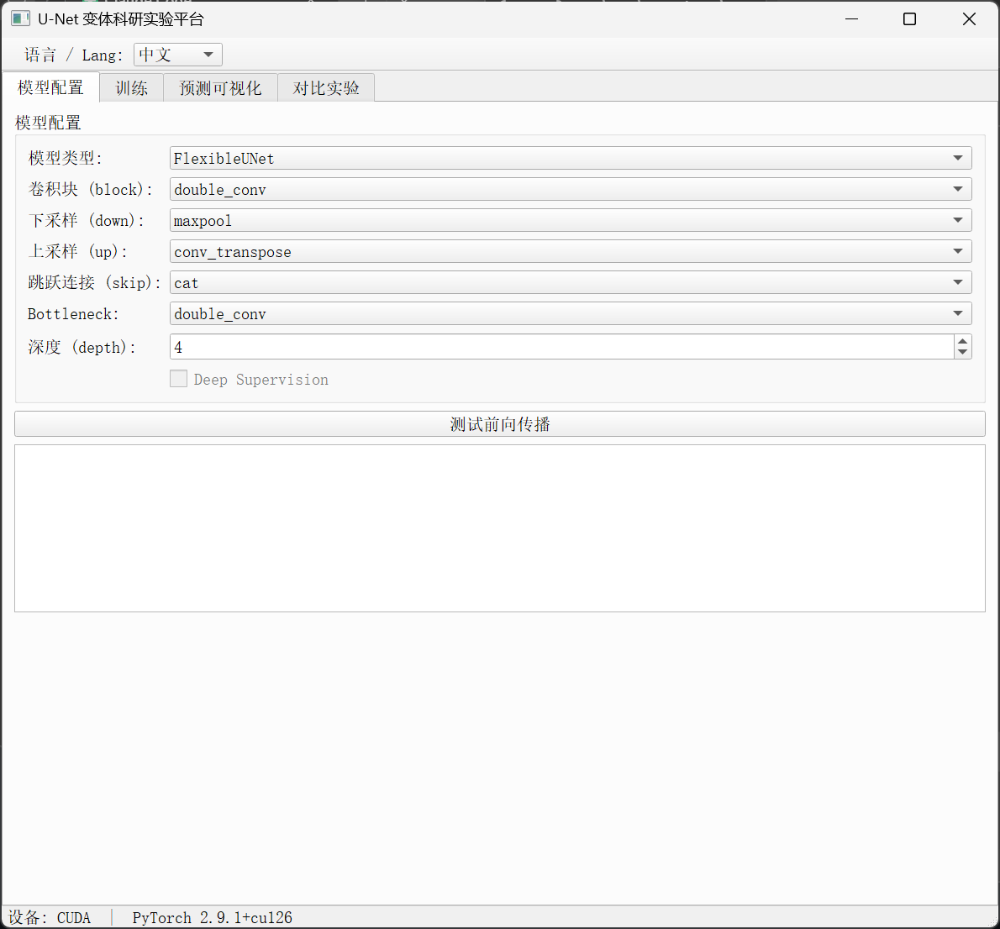
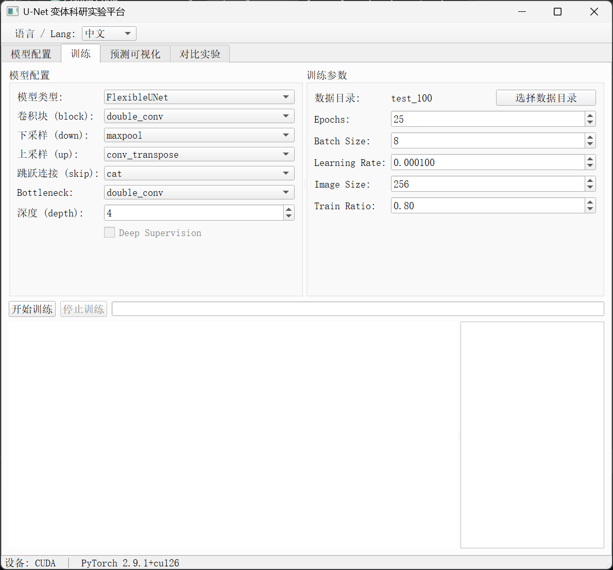
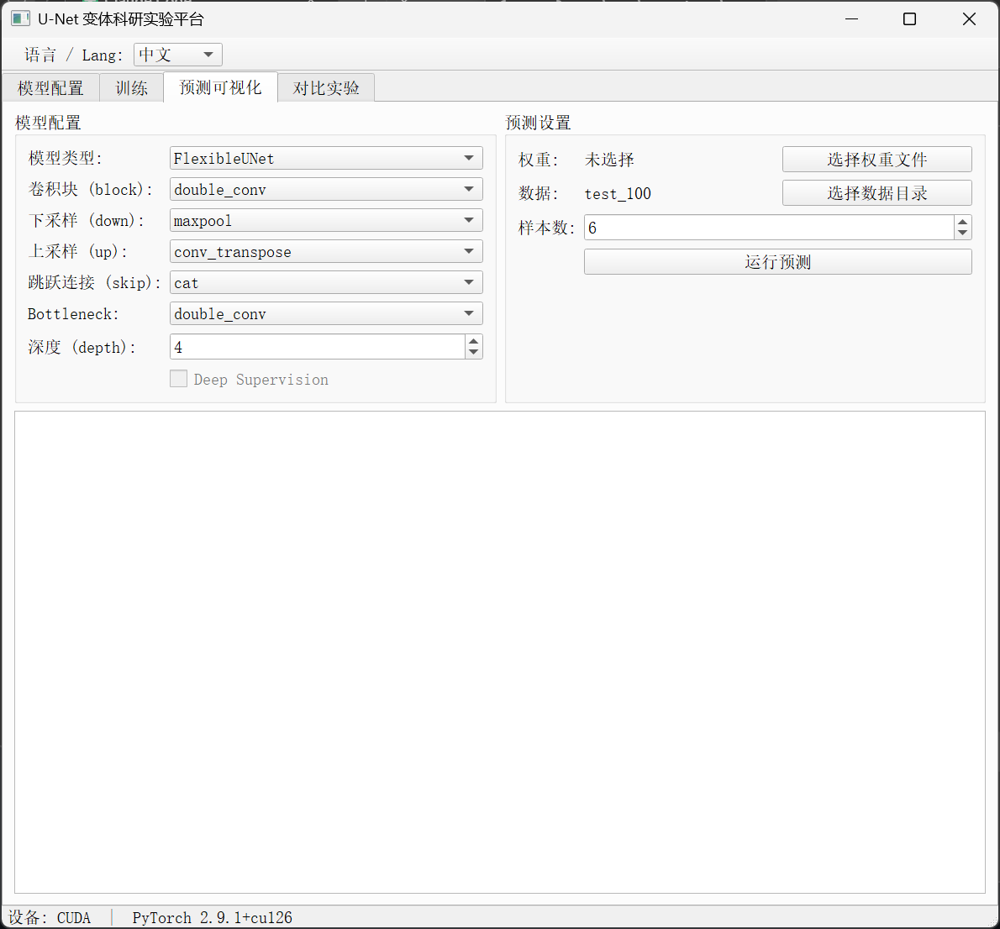
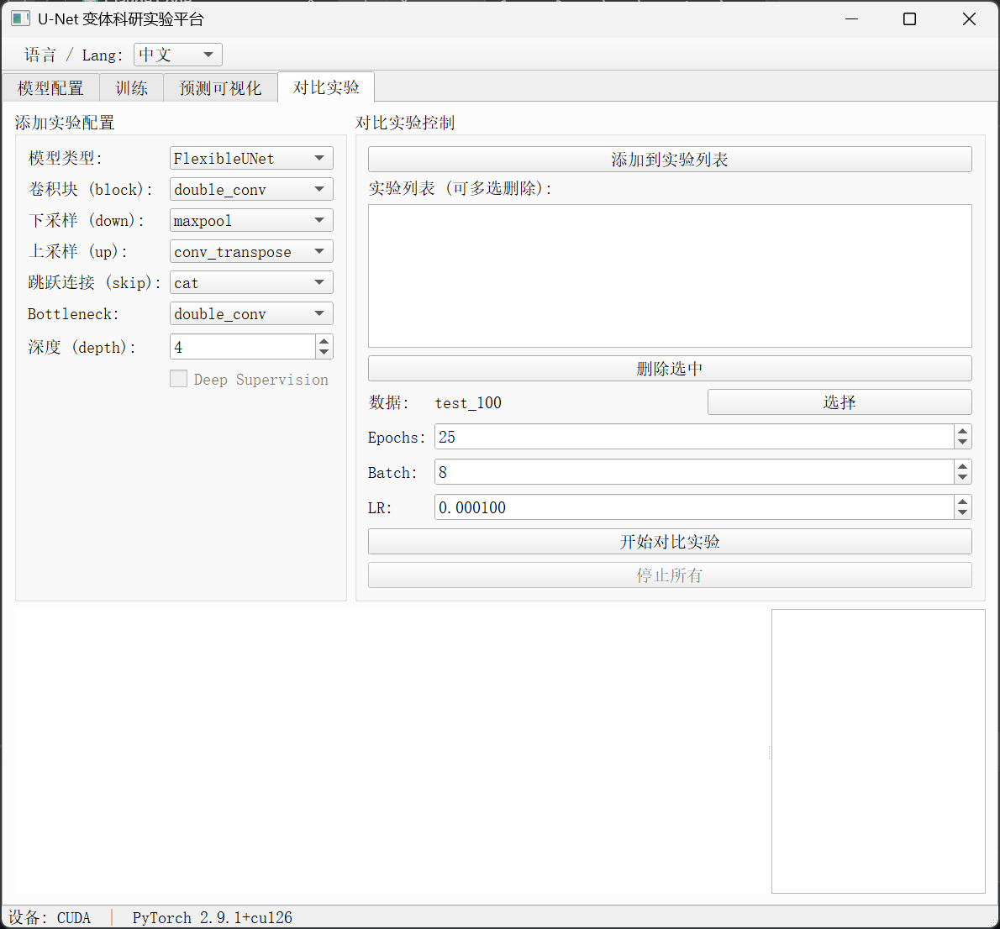

项目简介
ModularUNet 是一个模块化的 U-Net 变体科研实验平台，用于图像分割任务。编码器卷积块、下采样、上采样、跳跃连接、Bottleneck 均实现为可替换模块，支持通过参数或 PyQt5 图形界面自由组合，产生 11+ 种架构变体。同时包含独立的 U-Net++ 实现。
在 Oxford-IIIT Pet Dataset 上进行宠物二分类分割测试。
主要特性
- 模块化设计：卷积块、采样器、跳跃连接、Bottleneck 自由搭配
- 单一可配置模型产生 11+ 种架构变体
- U-Net++ 支持可选深度监督
- PyQt5 图形界面：配置、训练、预测、对比实验一站式完成
- 训练过程实时绘制 Loss / mIoU 曲线
- 多变体对比实验，曲线并排展示
- 编码器深度可调（3 / 4 / 5 层）
- 中英文界面切换
界面截图
模型配置 — 选择并测试变体组合

训练 — 实时 Loss 和 mIoU 曲线

预测可视化 — 分割结果可视化

对比实验 — 多变体横向对比

可用模块
卷积块 (block_type)
double_conv — 标准双卷积（Conv-BN-ReLU x2）res_block — 残差块，带 shortcut 连接，缓解梯度消失
下采样 (down_type)
maxpool — 2x2 最大池化，无参数strided_conv — 可学习的 stride=2 卷积
上采样 (up_type)
conv_transpose — 转置卷积（可学习上采样）bilinear — 双线性插值 + 1x1 卷积（无棋盘格伪影）
跳跃连接 (skip_type)
cat — 通道拼接（原版 U-Net）add — 逐元素相加，参数更少attention — 注意力门控（Oktay et al., 2018），抑制无关区域se — Squeeze-and-Excitation 通道注意力
Bottleneck (bottleneck_type)
double_conv / res_block — 同卷积块atrous — 多尺度空洞卷积（dilation 1,2,4,8），扩大感受野
模型架构
输入 → [编码器 x depth] → Bottleneck → [解码器 x depth] → 1x1 Conv → 输出
↓ ↑
下采样 上采样
└──────── 跳跃连接 ────────────────┘
每个组件（编码器块、下采样、上采样、跳跃连接、Bottleneck）均可独立配置。
项目结构
ModularUNet/
├── gui_app.py # PyQt5 图形界面入口
├── main_variants.py # 命令行：测试所有变体组合
├── unet_flexible.py # FlexibleUNet 可配置模型
├── unet_pp.py # U-Net++（嵌套 U-Net）
├── dataset.py # Oxford-IIIT Pet 数据集加载器
├── modules/
│ ├── __init__.py
│ ├── blocks.py # DoubleConv / ResBlock / AtrousBottleneck
│ ├── samplers.py # MaxPool / StridedConv / ConvTranspose / Bilinear
│ └── skip_connections.py # Cat / Add / AttentionGate / SE
├── test_100/ # 示例数据
├── requirements.txt
└── README.md
快速开始
安装依赖：
pip install -r requirements.txt
启动图形界面：
python gui_app.py
代码调用：
from unet_flexible import FlexibleUNet
# ResUNet + 注意力门 + 空洞 Bottleneck
model = FlexibleUNet(
block_type='res_block',
down_type='strided_conv',
up_type='bilinear',
skip_type='attention',
bottleneck_type='atrous',
depth=4,
)
参考
Project Overview
ModularUNet is a modular U-Net variant research platform for image segmentation. Encoder conv blocks, downsampling, upsampling, skip connections, and bottleneck are all implemented as interchangeable modules, supporting free combination via parameters or a PyQt5 GUI to produce 11+ architecture variants. Also includes a standalone U-Net++ implementation.
Tested on the Oxford-IIIT Pet Dataset for binary pet segmentation.
Key Features
- Modular design: mix and match blocks, samplers, skip connections, bottleneck
- 11+ architecture variants from a single configurable model
- U-Net++ with optional deep supervision
- PyQt5 GUI: configure, train, predict, and compare experiments visually
- Real-time training curves (Loss / mIoU)
- Multi-variant comparison experiments with side-by-side plots
- Adjustable encoder depth (3 / 4 / 5 levels)
- Bilingual UI (Chinese / English)
Screenshots
Model Config — Select and test variant combinations
Training — Real-time loss and mIoU curves
Prediction — Visualize segmentation results
Comparison — Multi-variant side-by-side comparison
Available Modules
Conv Blocks (block_type)
double_conv — Standard double convolution (Conv-BN-ReLU x2)res_block — Residual block with shortcut connection
Downsampling (down_type)
maxpool — Max pooling 2x2, no parametersstrided_conv — Learnable stride-2 convolution
Upsampling (up_type)
conv_transpose — Transposed convolution (learnable upsampling)bilinear — Bilinear interpolation + 1x1 conv (no checkerboard artifacts)
Skip Connections (skip_type)
cat — Channel concatenation (original U-Net)add — Element-wise addition, fewer parametersattention — Attention Gate (Oktay et al., 2018), suppresses irrelevant regionsse — Squeeze-and-Excitation channel attention
Bottleneck (bottleneck_type)
double_conv / res_block — Same as conv blocksatrous — Multi-scale atrous convolution (dilation 1,2,4,8), expands receptive field
Model Architecture
Input → [Encoder x depth] → Bottleneck → [Decoder x depth] → 1x1 Conv → Output
↓ ↑
Downsample Upsample
└──────── Skip Connection ─────────┘
Each component (Encoder block, Downsample, Upsample, Skip, Bottleneck) is independently configurable.
Project Structure
ModularUNet/
├── gui_app.py # PyQt5 GUI entry point
├── main_variants.py # CLI: test all variant combinations
├── unet_flexible.py # FlexibleUNet: configurable model
├── unet_pp.py # U-Net++ (Nested U-Net)
├── dataset.py # Oxford-IIIT Pet Dataset loader
├── modules/
│ ├── __init__.py
│ ├── blocks.py # DoubleConv / ResBlock / AtrousBottleneck
│ ├── samplers.py # MaxPool / StridedConv / ConvTranspose / Bilinear
│ └── skip_connections.py # Cat / Add / AttentionGate / SE
├── test_100/ # Sample data
├── requirements.txt
└── README.md
Quick Start
Install dependencies:
pip install -r requirements.txt
Launch GUI:
python gui_app.py
Use in code:
from unet_flexible import FlexibleUNet
# ResUNet + Attention Gate + Atrous Bottleneck
model = FlexibleUNet(
block_type='res_block',
down_type='strided_conv',
up_type='bilinear',
skip_type='attention',
bottleneck_type='atrous',
depth=4,
)
References